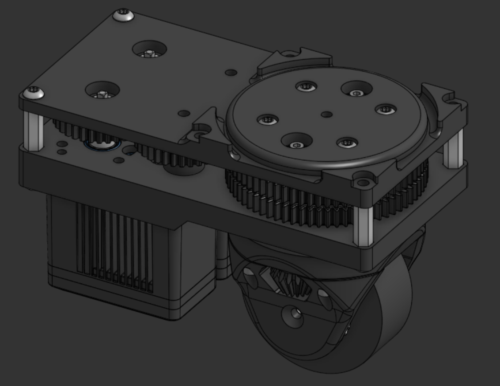
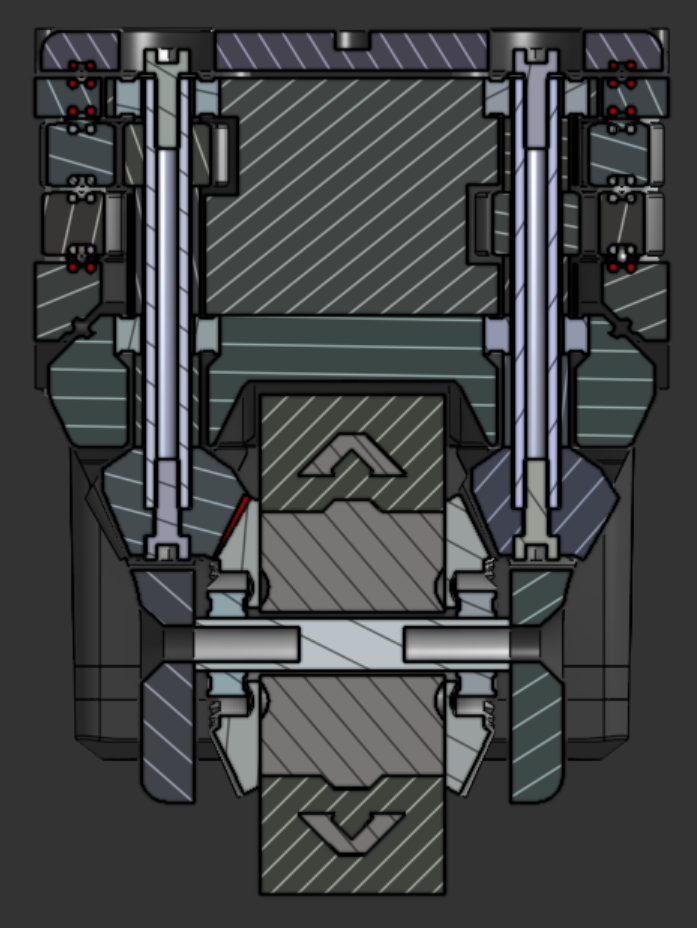
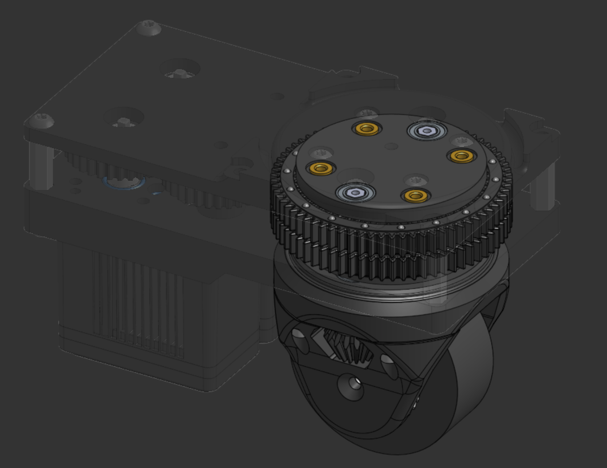
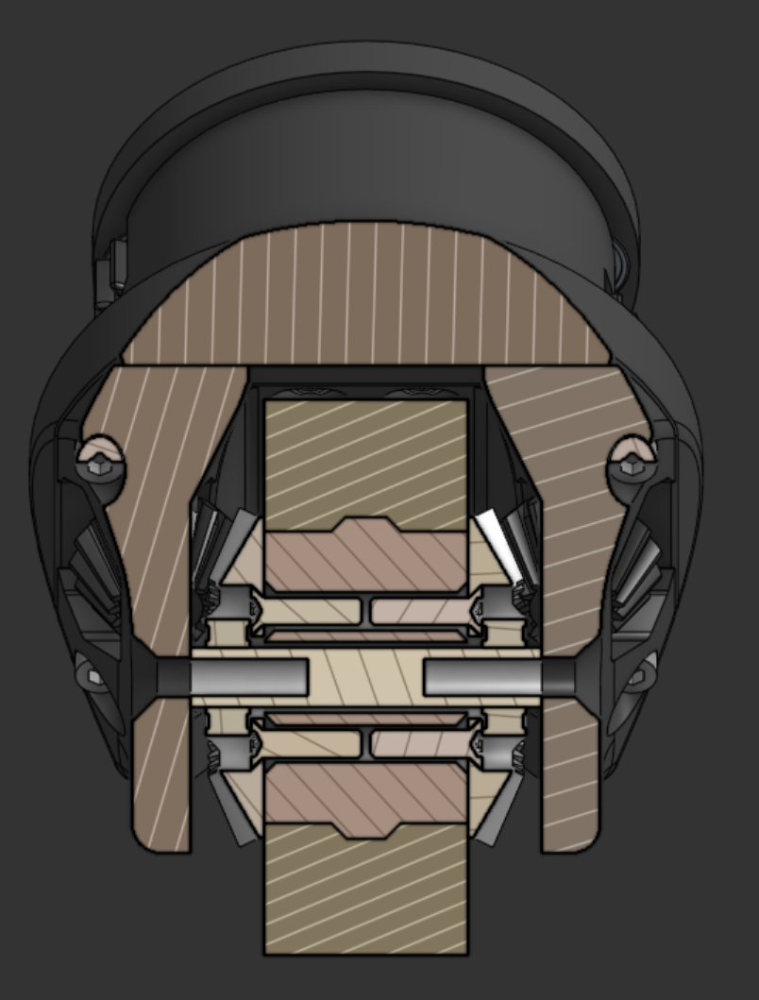

Differential Swerve Drive Module
Overview
I redesigned a drivetrain as a differential swerve module to enable full holonomic motion and substantially increase traction.

Challenge
VEX U is a collegiate-level robotics competition. The 2025-2026 season rewarded robots that could move in any direction and change heading quickly. Our drivetrain needed to provide holonomic motion, operate reliably with minimal maintenance, and use at least eight drive motors in total.
The main packaging challenge was fitting the motors, planetary gearbox, and differential into a compact module. Standard bearings were either too large or unavailable in the required sizes, so we integrated custom bearing features into the printed components.

My Contributions
- Printed ball bearings. I designed bearings in which 2 mm steel balls roll along 1 mm steel wire embedded in printed rings. The wire provides a durable race surface that plastic alone could not offer.
- Design for additive manufacturing. I shaped and oriented the rings to minimize print supports while maintaining accurate, clean race surfaces. This made the small bearing components practical to print and use within the compact module.
- Planetary-stage integration. I integrated the custom bearings into the planetary stage, allowing the gear stack to remain compact without relying on oversized standard bearings.
- Bearing cages. I designed cages to keep the balls evenly spaced around each ring. The tight clearances require accurate printing of both the cages and bearing rings.
- Wheel fabrication. I designed a cast wheel core bonded to a high-strength polyurethane tread. The curved contact patch increases traction while keeping the wheel compact and its center of gravity low.

Results
The module provided full holonomic motion and improved traction through its differential gearing. It remained compact enough to fit in the robot, and we simplified the design to make it practical to manufacture within the team's constraints.

Tools & Applied Skills
- Tools
- Parametric CAD, 3D printing, steel bearing wire and balls, polyurethane tread
- Skills
- Differential drivetrain design, bearing design, design for additive manufacturing, planetary gear packaging, wheel design and casting